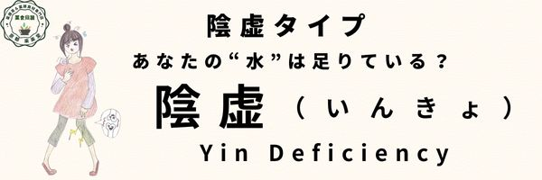

陰虚タイプ
体質 陰虚タイプ
からだを冷ますチカラが弱って火照る体質の「陰虚タイプ」
水不足、熱潮紅体質
のぼせや寝汗、ほてりが気になるあなたは陰虚タイプ
身体を潤す「陰液」が不足しており、内側から乾燥や熱っぽさが現れやすい「陰虚」体質です。
体質の説明、主な特徴
ニキビや肌荒れが気になる。夜型生活の人に多い。
しんどいときや生理中は、特に夜更かしは避け出来るだけ早く寝るようにしましょう。
のぼせ、暑がり、手足が火照る。痩せ気味。赤ら顔。
便秘気味、小便量少ない。
生理周期は早い傾向。
寝汗をかく、喉が渇く。
夏がつらく暑さに弱い。お風呂は烏の行水。シャワーで済ますことが多い。
糖尿や高血圧に注意。更年期障害の症状も出やすい。
なりやすい不調・病態（からだとこころ）
不眠、健忘、自律神経失調症、のぼせ、ほてり、
めまい、耳鳴り、難聴、白内障、ドライアイ、老眼、眼精疲労、飛蚊症、
喉頭炎、慢性気管支炎、間質性肺炎、胃・十二指腸潰瘍、大腸炎、便秘、
アトピー、皮膚乾燥、脱毛、生理不順、過少月経、バセドー病。
ホットフラッシュやイライラ、高脂血症、高血圧、不整脈や骨粗鬆症、情緒不安など更年期障害。
舌の特徴（正常との比較）
【正常な舌の特徴】
- 色：淡紅色（健康的な薄い赤）
- 舌苔：うすく白く、均一に分布
- 形：舌は適度な厚さで、輪郭がはっきり
- 舌質：潤いがあり、ヒビ割れなし
- 舌下静脈：ほとんど目立たない
正常な舌（画像）

【陰虚体質：舌の特徴】
- 色：紅色（やや赤みが強い）
- 舌苔：少ない、または無苔
- 形：やや細く、裂紋が見られることもある
- 舌質：乾燥し潤いに欠ける
陰虚の舌（画像）
他の体質との関連
「血虚」とも似ていますが、乾燥が特徴。
「腎陽虚」とはともに『腎』の働きが低下するので共通点もある。
また、「気滞」と同時に見られたり、「湿熱」や「血瘀」とも互いに影響しあう。
養生ポイント
過労や極限に近い精神疲労は避けましょう。食べ過ぎや香辛料の使いすぎも注意。
ただ水を飲むだけではダメで、充分な睡眠で「陰」を増やし昼の活動で「陽」を高め、陰陽のバランスが大切です。
未病先防…１
「津液」の消耗を絶つ。サウナや岩盤浴・ホットヨガなどの過度に急激な不自然な発汗や過労、睡眠不足、過剰なセックスを避けることです。
未病先防…２
ストレス、強壮剤、香辛料などでカラダの中に余分な「熱」を作らないことも「津液」の消耗を防ぐコツです。
脂っこい食事やお酒の摂り過ぎにも注意が必要です！
既病防変
「津液」を増やす睡眠法。夜間にしっかりと睡眠すること。
夕方から宵にかけてはゆったりのんびり過ごすように。
運動や精神活動、視覚、聴覚が冴えることは避けましょう。
経絡/ヨガ/運動処方
脾経、肝経、腎経、心経。
あぐら、膝打ち、開脚、腕振り体操をゆっくり気持ちいい強さで。
効果的なツボ=合谷など
効果的なヨガ＝呼吸法（プラーナヤーマ）など
薬膳施治
滋陰潜陽（じいんせんよう）
陰を補い潤いを与えほてりやのぼせを取る。
おすすめの食材
小麦、ぶどう、白菜、山芋、百合根、黒ゴマ、あわ、レモン、りんご、梨、キウイ、バナナ、蜂蜜、乳製品、豆腐、鴨肉、魚介類、カニ、いか、くらげなど
陰を補うもの。水分代謝を促進するもの。
ただし食材には温・熱・平・涼・寒の五つの性質があります。
今の自分の体質をチェックし、寒熱虚実の傾きを把握したうえで、バランスを中庸に整えてくれる食材をとりましょう。
陰虚タイプにおすすめの食材
- 白きくらげ（平・甘・淡／肺・胃）：養陰潤肺・生津止咳
- 枸杞の実（平・甘／肝・腎・肺）：滋補肝腎・益精明目
- 百合（微寒・甘／肺・心）：潤肺止咳・清心安神
- 桑の実（平・甘・酸／心・肝・腎）：補血滋陰・生津潤燥
- 松の実（温・甘／肺・大腸）：潤肺止咳・潤腸通便
- 金針菜（涼・甘／肝・腎）：清熱・利尿・安神
- 黒きくらげ（平・甘／肺・胃・肝）：養血・潤肺・止血
注意するもの
ねぎ、しょうが、にんにく、らっきょ、唐辛子、羊肉など熱を生むものは避ける。
摂ると良い四気・五味・帰経食材
性：涼性・平性 味：甘味・鹹味・酸味 帰経：肝・心・腎・胆・小腸・膀胱
京都 楽楽堂のおすすめ商品（カテゴリーリンクで対応）
- 桑の実 養眠茶▶︎この商品のページを見る（京都 楽楽堂）
- 蓮の葉 涼心茶▶︎この商品のページを見る（京都 楽楽堂）
- カラダ潤し茶▶︎この商品のページを見る（京都 楽楽堂）
- 増血美肌茶▶︎この商品のページを見る（京都 楽楽堂）
- 肝腎かなめ茶▶︎この商品のページを見る（京都 楽楽堂）
- 五望茶▶︎この商品のページを見る（京都 楽楽堂）
- 野ばらとなつめの美顔茶▶︎この商品のページを見る（京都 楽楽堂）
- 黒薔薇茶▶︎この商品のページを見る（京都 楽楽堂）
- 四神湯スープ▶︎この商品のページを見る（京都 楽楽堂）
- 白きくらげのスィーツセット▶︎この商品のページを見る（京都 楽楽堂）
- 胎菊花▶︎この商品のページを見る（京都 楽楽堂）
- 白きくらげ▶︎この商品のページを見る（京都 楽楽堂）
- 枸杞の実▶︎この商品のページを見る（京都 楽楽堂）
- 百合▶︎この商品のページを見る（京都 楽楽堂）
- 百合▶︎この商品のページを見る（京都 楽楽堂）
- 松の実▶︎この商品のページを見る（京都 楽楽堂）
- 金針菜▶︎この商品のページを見る（京都 楽楽堂）a>
- 黒きくらげ▶︎この商品のページを見る（京都 楽楽堂）
- スッキリさっぱり乃湯▶︎この商品のページを見る（京都 楽楽堂）
国際中医師からのアドバイス
カラダの中のものを陰陽で分けると「気」は陽、「血・津液」は陰に分類されます。
陰虚は血や津液などが不足し、熱を抑え、潤いを補い、滋潤させる働きが低下している状態です。
充分な睡眠で「陰」を増やし、昼の活動で「陽」を高めて、陰陽のバランスを調えることが重要です。